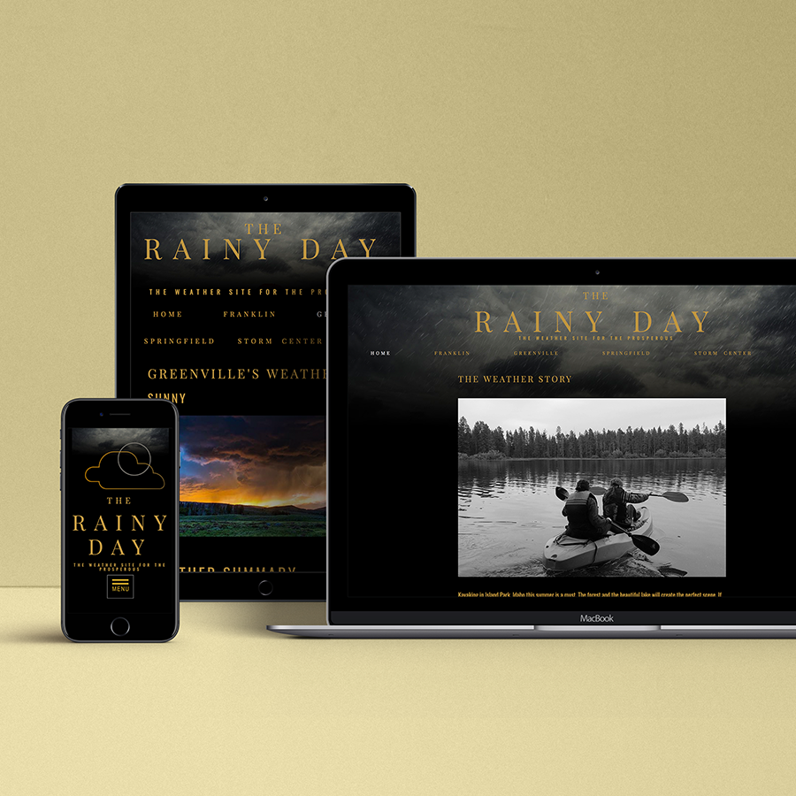
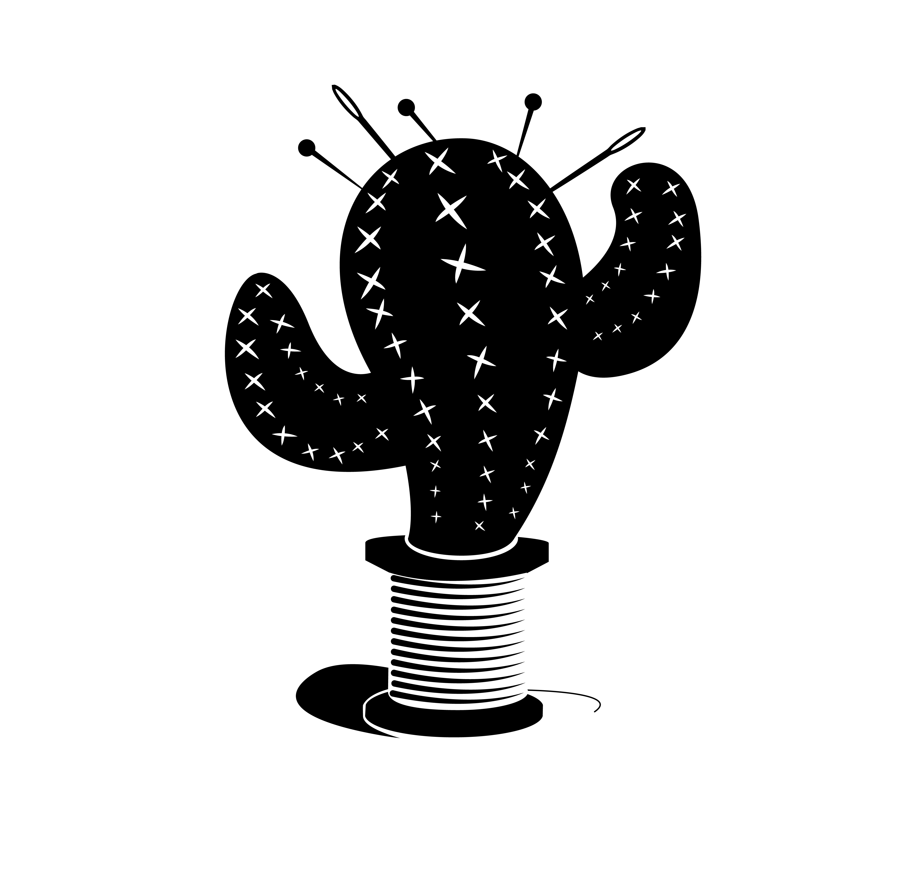
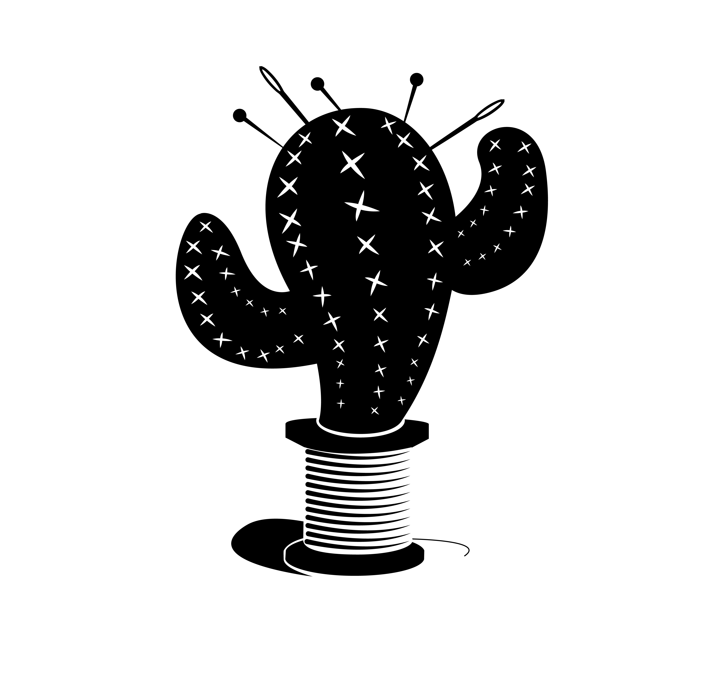

here's some of my stuff.
Web Design and Development
The Mountain Spoke Design and Development

The Mountain Spoke Website was created for a fictional company in Bozeman, Montana. This project consisted of first creating the company identity and target audience. After, the overall design concept and plan was created. A brief version of this design plan can be seen at this link. I then marked up the website and created a responsive design. The design consists of several pages including a shop page, a contact page and an event registration form. The finished website can be found at this link.
The Rainy Day Design and Development
The Rainy Day is a weather site. The target audience is wealthy travelers. I designed and developed this site from scratch, however, this site is not actually intended for your daily weather report. The information is accurate but this site was designed strictly for design and developmental purposes. The actual site can be found from my GitHub account at this link.
Binge: The Real Enemy of Productivity Prototype

Binge is a microsite prototype design that publicly enforces the abuse of online video streaming services like Netlix, YouTube, Hulu, and Amazon Prime Video. The site acts as a public service announcement for those who often binge watch on these services. This project was introduced as an information design project. The XD prototype can be found here.
The Mountain Spoke Design and Development

The Mountain Spoke Website was created for a fictional company in Bozeman, Montana. This project consisted of first creating the company identity and target audience. After, the overall design concept and plan was created. A brief version of this design plan can be seen at this link. I then marked up the website and created a responsive design. The design consists of several pages including a shop page, a contact page and an event registration form. The finished website can be found at this link.
Posters and Advertisements
Recovery & Change Poster Servies


This project was for sexual assault awareness month. It was featured in an Exhibit put on by the Family Crisis Center. The caption read: "There is no destination. But moving forward day by day is the ultimate goal. As long as there is movement, there is progress."
Leave the Door Open—An Anti-Pornography Campaign


This project presents a select few of the posters that I created recently. With each poster created, several corresponding ads were created as well. Some of the ads seen in this project include a TV ad (aka Digital Signage), a calendar ad for BYU-Idaho's master calendar as well as a web banner used on the website. In this group of posters I tried to focus on the design principles of space, focal point, heirarchy and others. Each poster either promotes a musical event like a concert or recital given by a person or ensemble, or promotes a musical class or class feature.
Leave the Door Open—An Anti-Pornography Campaign


These three posters are a part of an anti-pornography public service announcement campaign called "Leave the Door Open". For each poster I took photos of real people as my template for my designs. Each person really was holding a device in front of them or in their hands. I wanted each setting to feel genuine. The people in the background represent those we love and may be hurting while viewing pornography.
Booklets and Book Covers
The Grapes of Wrath Book Cover Design

For an academic project I was asked to recreate a book cover for a classic novel. This book cover was created by photographs I took and then manipulated slightly. Themes for the Grapes of Wrath include hard work, family, trial and poverty. These themes were illustrated in the simplicity of the designa as well as the sullen saturation and subject of the photograph.
Logo Design and Branding
Cactus Needles: A Tailor Company Logo Design
 

Cactus Needles: A Tailor Company Logo Design
Cactus Needles: A Tailor Company Logo Design

For a start-up company based in the Teton Valley in Idaho, USA, I created a company logo for them. Their name is Pinnacle Pest Elimination. The mountain range in the logo is that of the Tetons seen from the Idaho side.